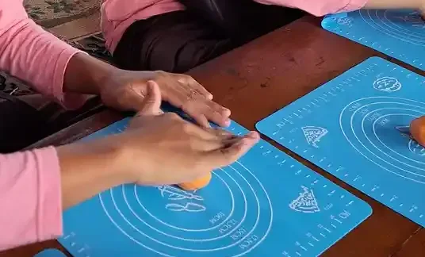
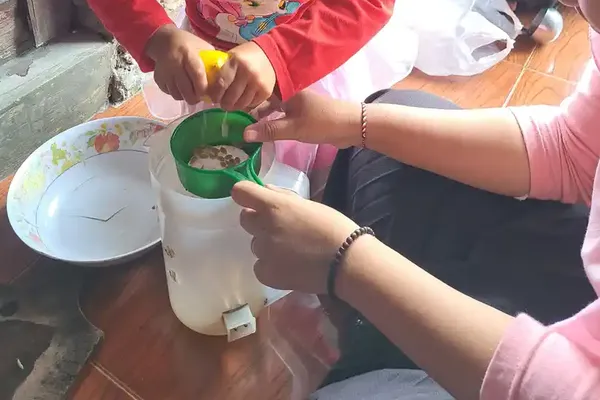
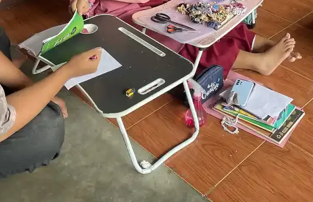

Jawaban singkat: Mencari terapis anak berkebutuhan khusus di Solo sebaiknya dimulai dari tujuan yang jelas, jalur rujukan yang dapat dipertanggungjawabkan, dan pemeriksaan kredensial. Jangan memilih hanya karena janji hasil cepat atau paket paling murah. Layanan yang baik menjelaskan asesmen, target fungsional, keterlibatan keluarga, biaya, serta jadwal evaluasi.
Daftar Isi
Mulai dari kebutuhan dan tujuan anak
Istilah terapi dapat terdengar luas, sedangkan keluarga biasanya datang dengan pertanyaan sangat praktis: anak sulit menyampaikan keinginan, belum nyaman memakai alat makan, mudah jatuh, kesulitan mengikuti instruksi, atau tidak bisa ikut bermain dengan teman. Tulis contoh kejadian sehari-hari, kapan terjadi, apa yang sudah dicoba, dan dukungan yang membantu. Catatan seperti ini lebih berguna daripada hanya menyebut label kondisi.
Tujuan terapi sebaiknya berhubungan dengan partisipasi. WHO menjelaskan layanan rehabilitasi sebagai rangkaian dukungan yang perlu terhubung dengan kebutuhan orang dan lingkungan, bukan sekadar latihan terpisah. Karena itu, tanyakan bagaimana keterampilan dari ruang terapi akan dipakai di rumah, sekolah, tempat ibadah, atau ruang bermain.

Jenis layanan yang mungkin dibutuhkan
Terapi wicara dapat mencakup komunikasi reseptif dan ekspresif, artikulasi, komunikasi augmentatif, serta aspek menelan sesuai pendidikan dan kewenangan profesional. Terapi okupasi biasanya melihat aktivitas sehari-hari, keterampilan tangan, pemrosesan sensori, bermain, dan kemandirian. Fisioterapi dapat berfokus pada gerak, postur, keseimbangan, kekuatan, serta cara anak berpindah atau beraktivitas dengan lebih aman. Psikologi, pedagogi khusus, dan layanan medis juga dapat berperan sesuai kebutuhan.
Nama layanan bukan jaminan kecocokan. Dua anak yang sama-sama mengalami kesulitan bicara bisa memerlukan target berbeda. Satu anak mungkin perlu sistem komunikasi alternatif, sementara anak lain membutuhkan dukungan memahami giliran percakapan. Terapis perlu menjelaskan alasan pemilihan metode, indikator kemajuan, risiko, dan kapan strategi harus dihentikan atau diubah. Keluarga boleh meminta penjelasan dengan bahasa sederhana.
| Kebutuhan yang diamati | Pertanyaan awal | Profesional yang mungkin terlibat |
|---|---|---|
| Komunikasi dan bahasa | Bagaimana anak meminta, menjawab, dan memahami? | Terapis wicara, psikolog, pendidik khusus |
| Aktivitas harian | Bagian mana dari makan, berpakaian, atau bermain yang sulit? | Terapis okupasi, pendidik, keluarga |
| Gerak dan posisi | Bagaimana anak berpindah dan menjaga keseimbangan? | Fisioterapis, dokter, terapis okupasi |
| Regulasi dan perilaku | Apa pemicu stres dan dukungan yang membantu? | Psikolog, pendidik, tim terapi |
Jalur mencari layanan terapi di Solo
Keluarga di Solo dapat memulai dari puskesmas, rumah sakit, dokter anak, sekolah, atau komunitas keluarga. Tanyakan apakah fasilitas memiliki layanan tumbuh kembang, rehabilitasi medik, psikologi, terapi wicara, terapi okupasi, atau rujukan ke penyedia yang sesuai. Gunakan situs resmi fasilitas atau nomor kontak resmi, bukan hanya unggahan lama. Jadwal, tenaga, dan cakupan layanan dapat berubah sehingga konfirmasi langsung tetap diperlukan.
Bila anak sudah bersekolah, minta guru menjelaskan situasi yang terlihat di kelas. Catatan sekolah tidak menggantikan asesmen klinis, tetapi dapat membantu keluarga menyusun pertanyaan. WHO mengingatkan bahwa disabilitas berhubungan dengan interaksi antara kondisi kesehatan dan lingkungan. Artinya, dukungan dapat berupa perubahan cara mengajar, alat bantu, atau penyesuaian lingkungan, bukan hanya sesi dengan terapis.
Contoh fasilitas publik di Solo Raya yang mencantumkan layanan terkait
Daftar di bawah ini bukan rekomendasi, bukan peringkat, dan bukan mitra YUKA. Kami hanya mencatat apa yang tertulis di situs resmi masing-masing fasilitas saat diperiksa pada 11 Oktober 2026. Layanan, jadwal, tenaga, dan syarat rujukan dapat berubah, jadi hubungi fasilitas sebelum datang.
- RSUD Dr. Moewardi, Jl. Kolonel Sutarto No. 132, Jebres, Surakarta, telepon (0271) 634634. Halaman layanan penunjang mencantumkan Rehabilitasi Medik dengan fisioterapi, okupasi terapi, terapi wicara, ortotik prostetik, dan pekerja sosial medik. Halaman layanan rawat jalan menyebut layanan tumbuh kembang di Klinik Anak, tes tumbuh kembang di Klinik Psikologi, dan layanan gigi untuk anak berkebutuhan khusus.
- RSUD Bung Karno Kota Surakarta, Jl. Sungai Serang 1, Kelurahan Mojo, Pasar Kliwon, Surakarta, telepon (0271) 2936300. Situs resminya mencantumkan poli Rehab Medik dan poli Spesialis Penyakit Anak. Situs tersebut tidak merinci terapi wicara atau okupasi terapi, jadi tanyakan langsung apakah layanan itu tersedia untuk anak.
- RS Ortopedi Prof. Dr. R. Soeharso Surakarta, Jl. Ahmad Yani, Pabelan, Kartasura, Sukoharjo (alamat sesuai situs unit rumah sakit). Kementerian Kesehatan menyebut ortopedi, rehabilitasi medik, dan ortotik prostetik sebagai layanan unggulannya, serta adanya fasilitas pasien pediatri. Fasilitas ini relevan terutama untuk kebutuhan gerak, postur, dan alat bantu. Tanyakan jenis terapi anak yang tersedia saat mendaftar.
Bila memakai BPJS Kesehatan, tanyakan dulu alur rujukannya ke puskesmas atau klinik tempat anak terdaftar sebelum datang ke rumah sakit.

Cara mengecek penyedia layanan
Sebelum membuat janji, tanyakan nama profesional yang akan menangani anak, pendidikan dan registrasi yang relevan, pengalaman pada tujuan yang keluarga sampaikan, durasi asesmen, format laporan, serta siapa yang melakukan supervisi. Penyedia yang transparan tidak keberatan menjelaskan batas layanan. Keluarga juga berhak mengetahui apakah sesi dilakukan individu atau kelompok, siapa saja yang boleh berada di ruangan, dan bagaimana data anak disimpan.
Waspadai janji seperti sembuh total dalam jumlah sesi tertentu, larangan berkonsultasi dengan dokter, keharusan membeli alat mahal, atau penggunaan rasa takut agar keluarga segera membayar. Tidak semua pendekatan memiliki bukti yang sama, dan tidak semua layanan cocok untuk setiap anak. Minta waktu untuk mempertimbangkan paket. Jika jawaban tidak jelas, cari pendapat kedua dari fasilitas atau profesional lain.

Apa yang seharusnya terjadi dalam asesmen dan sesi terapi?
Asesmen awal seharusnya memberi ruang bagi keluarga untuk menceritakan tujuan, rutinitas, riwayat layanan, kekuatan, dan kekhawatiran. Profesional dapat mengamati permainan atau aktivitas, mengajukan pertanyaan, memakai alat ukur yang sesuai, lalu menyampaikan temuan dengan batasan yang jujur. Satu pertemuan tidak selalu cukup untuk menyimpulkan kebutuhan anak. Bila informasi belum cukup, rencana dapat berupa observasi tambahan atau rujukan.
Sesi terapi yang baik tidak selalu terlihat seperti anak duduk diam mengerjakan lembar kerja. Anak dapat berlatih meminta giliran melalui permainan, memperbaiki posisi tubuh saat meraih benda, belajar memakai sendok, atau mencoba cara berkomunikasi yang lebih efektif. Yang penting, keluarga memahami tujuan, cara memberi dukungan, dan tanda anak mulai lelah. Anak tidak boleh dipaksa melewati rasa sakit atau ketakutan tanpa rencana keselamatan.
Evaluasi, jadwal, dan biaya
Tanyakan kapan evaluasi dilakukan dan indikator apa yang digunakan. Kemajuan dapat terlihat dari frekuensi anak meminta bantuan, durasi mengikuti kegiatan, kemampuan menyelesaikan langkah, atau berkurangnya bantuan yang dibutuhkan. Kemajuan tidak selalu berarti anak melakukan tugas dengan cara yang sama seperti anak lain. Ukuran yang baik adalah apakah anak lebih aman, lebih mampu berkomunikasi, dan lebih dapat berpartisipasi dalam aktivitas bermakna.
Minta rincian tertulis mengenai biaya konsultasi, asesmen, sesi lanjutan, laporan, alat, pembatalan, dan perjalanan bila ada kunjungan rumah. Bandingkan juga waktu tempuh, jadwal, dan kapasitas keluarga. CDC menjelaskan bahwa layanan intervensi dini mencakup dukungan bagi anak dan keluarga, serta kelayakan ditentukan melalui evaluasi keterampilan. Di Indonesia, mekanisme tiap fasilitas berbeda, sehingga informasi CDC menjadi prinsip umum, bukan aturan pendaftaran lokal.
- Bawa catatan singkat tentang rutinitas dan kekhawatiran keluarga.
- Tanyakan tujuan yang dapat diamati dan cara mengukur kemajuan.
- Pastikan profesional menjelaskan manfaat, batasan, risiko, dan alternatif.
- Minta ringkasan sesi atau latihan rumah yang realistis.
- Tinjau ulang layanan bila target tidak jelas atau anak terus mengalami stres.
Keluarga dapat membaca contoh fokus terapi okupasi atau dukungan pada gerak anak untuk menyiapkan pertanyaan, bukan untuk mendiagnosis sendiri. Artikel tentang sertifikasi terapis juga dapat membantu memahami pentingnya kredensial. Jika ada keadaan medis mendesak, nyeri, kejang, kesulitan bernapas, atau risiko keselamatan, hubungi layanan kesehatan, bukan menunggu sesi terapi berikutnya.
Keluarga juga dapat menilai apakah jadwal layanan masuk akal. Anak membutuhkan waktu untuk sekolah, tidur, makan, bermain, dan berinteraksi tanpa target terapi. Jadwal yang terlalu padat dapat membuat anak dan pengasuh kelelahan. Diskusikan prioritas, durasi program, serta kegiatan rumah yang ringan. Latihan rumah seharusnya dapat masuk ke rutinitas seperti membaca buku, berpakaian, berbelanja, atau bermain, bukan menambah daftar tugas yang membuat keluarga merasa gagal.
Kolaborasi lintas layanan tidak harus berupa rapat besar. Ringkasan satu halaman sudah cukup untuk menjelaskan tujuan, cara komunikasi anak, bantuan yang berhasil, tanda lelah, serta hal yang sebaiknya dihindari. Dengan persetujuan keluarga, informasi ini dapat dibagikan kepada sekolah atau profesional lain. Jika ada perbedaan pendapat, minta setiap pihak menjelaskan alasan dan bukti pengamatannya. Keluarga boleh mengambil waktu untuk memutuskan dan meminta pendapat kedua.
Layanan yang bermutu memperlakukan orang tua sebagai mitra, bukan sekadar pembayar sesi. Panduan CDC tentang intervensi dini menempatkan anak dan keluarga sebagai penerima dukungan. Prinsip ini relevan meski aturan lokal berbeda. Di Solo, konfirmasi selalu kepada fasilitas resmi tentang jalur rujukan, persyaratan, ketersediaan tenaga, dan biaya terbaru.
Konteks Solo juga perlu dipertimbangkan secara praktis. Waktu tempuh, kemacetan, akses kendaraan, ruang tunggu, dan jadwal sekolah dapat memengaruhi keberlanjutan terapi. Layanan yang sangat jauh tetapi hanya dapat diikuti sesekali belum tentu lebih bermanfaat daripada layanan yang dekat dan konsisten. Tanyakan apakah ada pilihan jadwal pagi atau sore, layanan kelompok, konsultasi daring untuk edukasi orang tua, atau rujukan ketika jadwal penuh. Jangan menganggap semua pilihan tersedia sebelum ada konfirmasi.
Bila anak berpindah terapis, minta ringkasan tujuan dan catatan kemajuan yang dapat dibawa ke penyedia berikutnya dengan persetujuan keluarga. Ringkasan tidak perlu memuat semua detail pribadi. Cukup jelaskan kebutuhan utama, strategi yang membantu, strategi yang tidak cocok, alat komunikasi, serta pertanyaan yang masih terbuka. Cara ini mencegah anak mengulang asesmen yang tidak perlu dan membantu profesional baru memahami riwayat dukungan secara lebih utuh.
Keluarga boleh menghentikan atau mengubah layanan. Perubahan bukan berarti keluarga gagal dan bukan berarti terapi sebelumnya tidak berguna. Bisa jadi tujuan sudah tercapai, kebutuhan anak berubah, jadwal terlalu berat, atau pendekatan tidak lagi cocok. Sampaikan alasan kepada penyedia bila aman dilakukan, minta rekomendasi transisi, dan simpan dokumen penting. Jika layanan menolak memberikan ringkasan dasar atau menekan keluarga agar terus membayar, pertimbangkan bantuan fasilitas lain.
Perhatikan kesejahteraan pengasuh. Mengantar terapi, mengatur pekerjaan, menyiapkan latihan, dan menjawab pertanyaan keluarga besar membutuhkan tenaga. Rencana dukungan yang baik mempertimbangkan kapasitas pengasuh, bukan hanya jadwal ideal di atas kertas. Bicarakan satu atau dua prioritas utama dengan profesional. Anak tetap membutuhkan waktu bermain bebas, tidur cukup, relasi hangat, dan pengalaman menjadi anak tanpa terus dinilai.
Simpan pula nomor kontak dan jadwal rujukan secara teratur. Bila penyedia layanan mengubah jam praktik, keluarga perlu tahu siapa yang dapat dihubungi dan kapan harus meminta bantuan lain. Rencana cadangan tidak berarti mengharapkan masalah. Rencana cadangan membuat keluarga tidak panik ketika anak sakit, terapis cuti, atau layanan penuh. Tulis informasi penting di tempat yang dapat diakses pengasuh utama, dengan tetap menjaga kerahasiaan data anak.
Saat memilih layanan, tanyakan bagaimana anak dilibatkan dalam membuat pilihan. Anak mungkin belum dapat memberi persetujuan dengan kalimat panjang, tetapi ekspresi, gerak menjauh, menunjuk, atau memilih benda tetap perlu diperhatikan. Profesional dapat memakai pilihan visual dan jeda untuk mengetahui respons anak. Keluarga sebaiknya tidak menerima pendekatan yang menganggap diam sebagai setuju atau tangisan sebagai tanda terapi berhasil.
Bacaan lanjutan yang relevan adalah terapi wicara, terapi okupasi, perbedaan terapi okupasi dan terapi wicara, dan macam-macam terapi pada anak. Jika satu tautan tidak menjawab kebutuhan keluarga, kembali ke tujuan awal dan minta penjelasan dari fasilitas resmi.
Pertanyaan yang Sering Diajukan
Di mana mencari terapis anak berkebutuhan khusus di Solo?
Mulailah dari dokter anak, puskesmas, rumah sakit, sekolah, komunitas keluarga, atau organisasi disabilitas yang dapat menjelaskan jalur rujukan. Di Kota Surakarta, RSUD Dr. Moewardi dan RSUD Bung Karno mencantumkan layanan rehabilitasi medik di situs resminya. Gunakan situs resmi fasilitas bila tersedia, lalu hubungi langsung untuk memastikan layanan masih berjalan.
Apa bedanya terapi wicara, okupasi, dan fisioterapi?
Terapi wicara dapat berfokus pada komunikasi, bahasa, suara, atau fungsi menelan sesuai kewenangan profesional. Terapi okupasi berfokus pada partisipasi dalam aktivitas bermakna, sedangkan fisioterapi banyak berkaitan dengan gerak, posisi, kekuatan, dan fungsi fisik. Kebutuhan tiap anak dapat tumpang tindih.
Apakah anak harus punya diagnosis sebelum terapi?
Tidak semua konsultasi awal mensyaratkan diagnosis. Namun, penyedia layanan perlu menjelaskan proses asesmen, batas kewenangan, dan kapan rujukan medis atau psikologis diperlukan. Jangan menerima klaim bahwa satu terapi dapat memastikan diagnosis atau menyembuhkan semua kondisi.
Bagaimana mengecek kredensial terapis?
Tanyakan nama lengkap, profesi, pendidikan, registrasi atau izin yang relevan, pengalaman pada tujuan layanan, supervisor bila ada, serta siapa yang menyusun dan meninjau program. Informasi harus disampaikan terbuka dan tidak boleh menekan keluarga untuk membayar paket sebelum asesmen.
Berapa biaya terapi anak di Solo?
Biaya berbeda menurut jenis layanan, durasi, fasilitas, asesmen, dan frekuensi. Karena angka dapat berubah, minta rincian tertulis tentang tarif konsultasi, asesmen, sesi, pembatalan, alat, dan laporan. Bandingkan transparansi layanan, bukan hanya harga terendah.
Berapa kali anak perlu terapi dalam seminggu?
Frekuensi ditentukan berdasarkan tujuan, kapasitas anak, rekomendasi profesional, kesempatan latihan di rumah, sekolah, dan kondisi keluarga. Jadwal padat tidak otomatis lebih baik. Minta indikator kemajuan dan jadwal evaluasi agar keputusan dapat disesuaikan.
Apa tanda layanan terapi perlu dievaluasi ulang?
Evaluasi diperlukan bila target tidak jelas, laporan tidak pernah dibahas, anak terus menunjukkan stres tanpa rencana dukungan, keluarga tidak boleh bertanya, atau ada janji hasil pasti. Sampaikan kekhawatiran dan minta rencana perbaikan atau rujukan kedua.
Bacaan Terkait
Sumber dan Referensi
- WHO - Package of interventions for rehabilitation
- WHO - Disability and health
- CDC - Early Intervention
- WHO - Monitoring children's development in primary care services
- RSUD Dr. Moewardi - Layanan Penunjang
- RSUD Dr. Moewardi - Layanan Rawat Jalan
- RSUD Bung Karno Kota Surakarta - Situs resmi
- Kemenkes - Penguatan transformasi layanan kesehatan RSO Soeharso Surakarta
Catatan: Artikel ini bersifat edukasi umum dan bukan pengganti konsultasi dengan psikolog, tenaga kesehatan, atau petugas layanan sosial resmi. Sumber resmi diperiksa pada 11 Oktober 2026. Fasilitas yang disebut adalah contoh fasilitas publik yang mencantumkan layanan terkait di situs resminya, bukan rekomendasi, peringkat, atau mitra YUKA. Ketersediaan layanan, jadwal, biaya, dan kewenangan profesional harus dikonfirmasi langsung kepada penyedia layanan dan fasilitas kesehatan terkait.
Status tinjauan: artikel ini disusun oleh tim pendidik YUKA, belum ditinjau oleh dokter, terapis, atau psikolog berlisensi. Informasi fasilitas diambil dari situs resmi pada 11 Oktober 2026 dan dapat berubah. Alur tinjauan dan koreksi dijelaskan di Kebijakan Editorial YUKA. Untuk keputusan asesmen dan terapi, rujuklah pada tenaga kesehatan yang menangani anak.